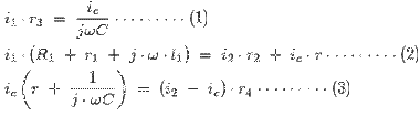
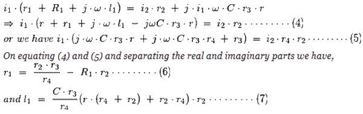
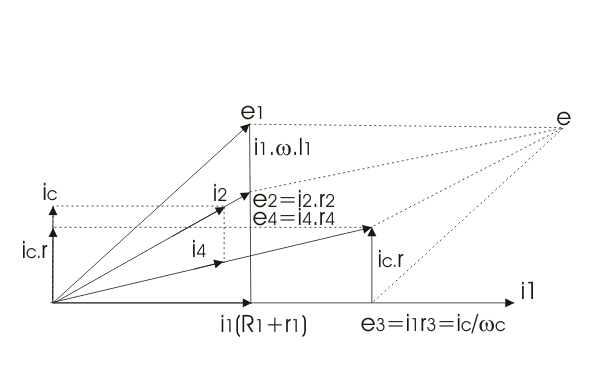

Anderson's Bridge
Let us understand why there is need of Anderson's bridge though we have Maxwell bridge and Hay's bridge to measure quality factor of the circuit. The main disadvantage of using Hay's bridge and Maxwell bridge is that, they are unsuitable of measuring the low quality factor. However Hay's bridge and Maxwell bridge are suitable for measuring accurately high and medium quality factor respectively. So, there is need of bridge which can measure low quality factor and this bridge is modified Maxwell's bridge and known as Anderson's bridge.
Actually this bridge is the modified Maxwell inductor capacitance bridge. In this bridge double balance can obtained by fixing the value of capacitance and changing the value of electrical resistance only. It is well known for its accuracy of measuring inductor from few micro Henry to several Henry. The unknown value of self inductor is measured by method of comparison of known value of electrical resistance and capacitance. Let us consider the actual circuit diagram of Anderson's bridge.(see figure given below).
In this circuit the unknown
inductor is connected between the point a and b with
electrical resistance r
1 (which is pure resistive). The arms bc, cd and da consist of resistances r
3, r
4 and r
2 respectively which are purely resistive. A standard
capacitor is connected in series with variable
electrical resistance r and this combination is connected in parallel with cd. A supply is connected between b and e.
Now let us derive the expression for l
1 and r
1:
At balance point, we have the following relations that holds good and they are:
i
1 = i
3 and i
2 = i
c + i
4
Now equating
voltages drops we get,

Putting the value of i
c in above equations, we get

The above equation (7) obtained is more complex that we have obtained in
Maxwell bridge. On observing the above equations we can easily say that to obtain convergence of balance more easily, one should make alternate adjustments of r
1 and r in Anderson’s bridge.
Now let us look how we can obtain the value of unknown inductor experimentally. At first set the signal generator frequency at audible range. Now adjust r1 and r such that phones gives a minimum sound. Measure the values of r1 and r (obtained after these adjustments) with the help of multimeter. Use the formula that we have derived above in order to find out the value of unknown inductance. The experiment can be repeated with the different value of standard capacitor.
Phasor Diagram of Anderson's Bridge
Let us mark the voltage drops across ab ,bc, cd and ad as e1, e2, e3 and e4 as shown in figure above.

Here in the phasor diagram of Anderson's bridge, we have taken i1 as reference axis. Now ic is perpendicular to i1 as capacitive load is connected at ec, i4 and i2 are lead by some angle as shown in figure. Now the sum of all the resultant voltage drops i.e. e1, e2, e3 and e4 is equal to e, which is shown in phasor diagram. As shown in the phasor diagram of Anderson's bridge the resultant of voltages drop i1(R1 + r1) and i1.ω.l1 (which is shown perpendicular to i1) is e1. e2 is given by i2.r2 which makes angle 'A' with the reference axis. Similarly, e4 can be obtained by voltage drop i4.r4 which is making angle 'B' with reference axis.
Advantages of Anderson's Bridge
(1) It is very easy to obtain the balance point in Anderson's bridge as compared to Maxwell bridge in case of low quality factor coils.
(2) There is no need of variable standard capacitor is required instead of thin a fixed value capacitor is used.
(3) This bridge also gives accurate result for determination of capacitance in terms of inductance.
Disadvantages of Anderson's Bridge
(1) The equations obtained for inductor in this bridge is more complex as complex as compared to Maxwell's bridge.
(2) The addition of capacitor junction increases complexity as well as difficulty of shielding the bridge.
Considering above all the advantages and disadvantages, Maxwell bridge is preferred over Anderson's bridge whenever use of variable capacitor is permissible.
 by
by